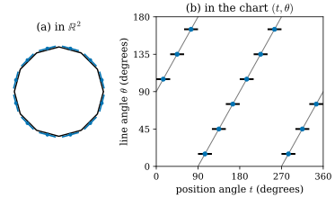
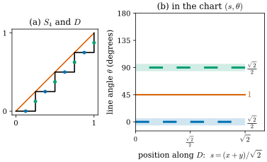

46.4 Varifolds
Goals
- varifold를 \(\Omega \times G_{d,n}\) 위의 Radon measure로 정의하고, 그 mass \(\norm{V}\)와 점마다의 plane의 distribution(Young measure)으로 나누어 읽을 수 있다.
- smooth surface, polygon, 교차하는 두 직선, 여러 겹의 surface가 rectifiable varifold이고, point cloud와 voxel 데이터가 rectifiable이 아닌 varifold라는 것을 식으로 쓸 수 있다.
- varifold의 수렴을 정의하고, staircase의 극한 varifold \(\sqrt2\,\mathcal{H}^1\llcorner D \otimes (\tfrac12\delta_{P_h} + \tfrac12\delta_{P_v})\)를 계산해서 그것이 대각선의 varifold와 다르다는 것을 보일 수 있다.
Prerequisites
- Section 46.2: Radon measure(Definition 46.2.1), Hausdorff measure(Definition 46.2.3), weak-* convergence(Definition 46.2.6), compactness(Theorem 46.2.9), push-forward(Definition 46.2.11)
- Section 46.3: Grassmannian \(G_{d,n}\)(Definition 46.3.1), 거리 \(\norm{P - Q}\)(Proposition 46.3.4), \(G_{1,2}\)의 그림(Figure 46.3.1)
Motivation
Section 46.1에서 모든 데이터는 (위치, 방향 없는 plane, mass)의 목록이었고, smooth surface는 그 연속판이었다. Section 46.2는 “위치와 mass”을 measure로, Section 46.3은 “방향 없는 plane”을 \(G_{d,n}\)의 점으로 만들었다. 둘을 합치는 방법은 하나다. 위치와 plane의 쌍 \((x, P)\)가 사는 공간 \(\Omega \times G_{d,n}\) 위에 mass를 두는 것이다. 그것이 varifold다. 이렇게 하면 staircase의 극한처럼 “한 점에 두 방향이 반씩” 있는 대상도 자연스럽게 들어오고, varifold로 가깝다는 것은 위치와 mass와 tangent가 함께 가깝다는 뜻이 된다.
Definition and Mass
Definition 46.4.1 (varifold). \(\Omega \subseteq \R^n\)을 open set, \(1 \le d \lt n\)이라 하자. \(\Omega\) 위의 \(d\)-varifold(바리폴드)는 \(\Omega \times G_{d,n}\) 위의 Radon measure \(V\)다. test function \(\varphi \in C_c(\Omega \times G_{d,n})\)에 대해
로 쓴다. [BLM17, Def. 2.1], [BLM22, Def. 2.1].
정의는 이것이 전부다. 위치 \(x\)와 plane \(S\)의 함수 \(\varphi\)를 넣으면 숫자를 돌려주는 기계, 곧 (46.1.1)과 (46.1.2)의 공통의 꼴이다. \(G_{d,n}\)이 compact하므로 \(\Omega\)의 compact set \(K\)에 대해 \(K \times G_{d,n}\)도 compact하고, Radon measure라는 조건은 “\(\Omega\)의 compact set 위에 mass가 유한하다”는 것과 같다.
Definition 46.4.2 (mass). \(\pi(x, S) = x\)라 하자. varifold \(V\)의 mass(질량)는 push-forward \(\norm{V} = \pi_\#V\), 곧 \(\Omega\)의 Borel set \(B\)마다 \(\norm{V}(B) = V(B \times G_{d,n})\)인 \(\Omega\) 위의 Radon measure다. test function으로는 \(\int\psi\,d\norm{V} = \int\psi(x)\,dV(x, S)\)이다. [BLM17, Def. 2.3].
mass는 varifold에서 plane을 잊고 “어디에 얼마나”만 남긴 것이다. 3D vision의 말로 하면 normal을 버린 point cloud의 밀도다. 이 장에서는 mass를 \(\norm{V}\)로 쓰고, 전체 mass \(\norm{V}(\Omega)\)도 같은 기호로 쓴다.
Example 46.4.3 (the varifold of a curve or a surface). \(M\)이 \(\Omega\) 안의 \(d\)차원 \(C^1\) submanifold이고 넓이가 국소적으로 유한하면
\[ V_M(\varphi) = \int_M\varphi(x, T_xM)\,d\mathcal{H}^d(x) \]
는 varifold이고 \(\norm{V_M} = \mathcal{H}^d\llcorner M\)이다. unit circle \(C\)이면 \(V_C(\varphi) = \int_0^{2\pi}\varphi\big(x(t), P(t + \tfrac\pi2)\big)\,dt\)이고(\(P(\theta)\)는 각 \(\theta\)인 직선, Example 46.3.3), 예를 들어 \(V_C(1) = 2\pi\), \(V_C(P_{11}) = \pi\)이다(Example 46.1.1). polygon은 edge마다 그 직선을 붙인 것의 합 \(\sum_e\mathcal{H}^1\llcorner e \otimes \delta_{P_e}\)이다(기호 \(\otimes\)는 바로 아래에서 설명한다).
Verification: verify/v-46-4-varifolds.py
기호 \(\mu \otimes \delta_{T_x}\)는 “\(\mu\)의 mass를 위치 \(x\)마다 plane \(T_x\) 하나에 몰아 둔다”는 뜻이다. 곧 \((\mu \otimes \delta_{T_x})(\varphi) = \int\varphi(x, T_x)\,d\mu(x)\)이다. 위의 \(V_M\)은 \(\mathcal{H}^d\llcorner M \otimes \delta_{T_xM}\)이다.
Figure 46.4.1은 이 대상을 눈으로 보는 방법이다. (a)는 unit circle의 내접 정12각형(검정)과 12점의 point cloud(파랑, 점마다 tangent line)다. (b)는 같은 대상을 위치와 직선의 좌표 \((t, \theta)\)에 그린 것이다. \(t\)는 점의 polar angle, \(\theta \in [0^\circ, 180^\circ)\)는 직선의 각이다. circle의 varifold는 \(\theta = t + 90^\circ\)(mod \(180^\circ\))인 톱니 모양의 선(회색) 위에 고르게 놓인 mass이다. polygon의 edge 하나는 위치가 \(30^\circ\)만큼 움직이는 동안 직선이 그대로이므로 수평 선분이 되고, point cloud의 점은 톱니 위의 점이 된다. 세 대상이 이 좌표에서 서로 가깝다는 것이 varifold로 가깝다는 것이다. polygon의 수평 선분이 톱니에서 가장 멀리 떨어진 곳(vertex 근처)에서 직선 사이의 거리는 \(\sin(\pi/12) = 0.259\)다.

Rectifiable Varifolds
smooth surface의 varifold는 위치마다 plane이 하나다. 이 성질만 남기고 smoothness를 버린 것이 rectifiable varifold다. 그러려면 “거의 어디서나 tangent plane이 있는 집합”이 필요하다.
Definition 46.4.4 (rectifiable varifold). (a) \(M \subseteq \R^n\)이 countably \(d\)-rectifiable(가산 \(d\)-정류 집합)이라는 것은 \(\mathcal{H}^d(M_0) = 0\)인 \(M_0\)과 Lipschitz map \(F_j\colon\R^d \to \R^n\)(\(j = 1, 2, \dots\))이 있어 \(M \subseteq M_0 \cup \bigcup_jF_j(\R^d)\)인 것이다. 이것은 \(M\)이 \(\mathcal{H}^d\)-null set을 빼면 countably many \(C^1\) \(d\)-submanifold에 덮인다는 것과 같다.
(b) 이런 \(M\)이 compact set마다 유한한 \(\mathcal{H}^d\)를 가지면, \(\mathcal{H}^d\)-a.e. \(x \in M\)에서 approximate tangent space(근사 접공간) \(T_xM \in G_{d,n}\)이 하나 있다. 이것은 \(M\)을 \(x\) 중심으로 \(1/r\)배 확대한 집합의 \(\mathcal{H}^d\)가 \(r \to 0\)에서 plane \(T_xM\)의 \(\mathcal{H}^d\)로 weak-* 수렴하는 유일한 plane이다. \(M\)이 \(C^1\) submanifold 조각 \(N\)에 들어 있는 \(\mathcal{H}^d\)-a.e. 점에서 \(T_xM = T_xN\)이다.
(c) \(\theta\colon M \to (0, \infty)\)가 \(\mathcal{H}^d\llcorner M\)에 대해 locally integrable이면
로 정한 varifold \(v(M, \theta) = \theta\,\mathcal{H}^d\llcorner M \otimes \delta_{T_xM}\)을 rectifiable varifold(정류가능 바리폴드), \(\theta\)를 그 multiplicity라 한다. \(\theta\)가 정수값이면 integral varifold(정수 바리폴드)라 한다. [BLM17, Def. 2.2].
(b)는 정리이고 증명은 [Simon83, Chapter 3]에 있다. 쉬운 말로 하면, rectifiable set은 “\(C^1\) surface 조각을 셀 수 있을 만큼 이어 붙인 것”이고, 넓이 \(0\)인 곳(조각이 만나는 선, 꺾인 모서리, 교차점)을 빼면 어디서나 tangent plane이 있다. 넓이 \(0\)인 곳은 \(\mathcal{H}^d\)-적분에 기여하지 않으므로 거기서 \(T_xM\)이 정해지지 않아도 (46.4.2)는 잘 정의된다.
Example 46.4.5 (rectifiable varifolds that are not surfaces).
- 두 직선의 교차: \(M = L_1 \cup L_2\)(원점에서 만나는 두 직선). 원점 하나는 \(\mathcal{H}^1\)-null이므로 \(v(M, 1) = \mathcal{H}^1\llcorner L_1 \otimes \delta_{L_1} + \mathcal{H}^1\llcorner L_2 \otimes \delta_{L_2}\)이다. 교차점에서 tangent를 고를 필요가 없다.
- triple junction: 원점에서 나가는 세 half-line의 합집합. 이것도 rectifiable이다. Section 46.5에서 \(120^\circ\) junction이 특별하다는 것을 본다.
- 여러 겹: \(v(\mathbb{D}, 2)\)(unit disk \(\mathbb{D}\)를 multiplicity \(2\)로). 납작해지는 ellipsoid의 극한이다(Exercise 46.1.4). \(v(\mathbb{D}, 2)\)와 \(2v(\mathbb{D}, 1)\)은 같은 varifold다.
- polyhedral surface: face \(F\)마다 plane \(P_F\)를 붙인 \(\sum_F\mathcal{H}^d\llcorner F \otimes \delta_{P_F}\). edge와 vertex는 \(\mathcal{H}^d\)-null이다. [BLM17, Def. 2.15]는 이것을 polyhedral varifold라 부르고, integral varifold다.
Discrete Varifolds
데이터는 보통 rectifiable이 아니다. 점에는 넓이가 없고, voxel에는 부피가 있다.
Definition 46.4.6 (point cloud varifold). 점 \(x_i \in \Omega\), mass \(m_i \gt 0\), plane \(P_i \in G_{d,n}\)(\(i = 1, \dots, N\))에 대해
를 point cloud varifold(점구름 바리폴드)라 한다. mass는 \(\norm{V} = \sum_im_i\delta_{x_i}\)이다. [BLM17, Def. 2.12].
네 논문이 모두 이 정의를 쓴다. [BLM17]과 [BLM22]는 point cloud에 PCA로 구한 plane \(P_i\)와 mass \(m_i\)를 붙여 쓰고, [GeoSplat25, §2.2]는 Gaussian 중심의 point cloud varifold를 쓴다. [ManifoldGS26, Def. 1]의 Gaussian varifold surrogate \(V_{\mathcal{G}}(\varphi) = \sum_iq_i\,\varphi(\mu_i, P_i)\)도 정확히 이 꼴이고, 중심 \(\mu_i\), covariance가 주는 plane \(P_i\), opacity와 따로 둔 mass \(q_i\)를 쓴다(Section 46.8). point cloud varifold의 support는 유한 집합이므로 \(d \ge 1\)이면 rectifiable이 아니다.
[BLM17, Def. 2.11]은 voxel 데이터를 위한 volumetric varifold \(\sum_K\tfrac{m_K}{\abs{K}}\mathcal{L}^n\llcorner K \otimes \delta_{P_K}\)도 정의한다. cell \(K\)마다 mass \(m_K\)를 cell 안에 고르게 펴고 plane \(P_K\) 하나를 붙인 것이다. 이것도 support가 \(n\)차원이라 rectifiable이 아니다. 같은 cell 데이터로 만든 volumetric varifold와 point cloud varifold의 차이가 cell의 지름 \(\delta\)와 mass의 곱 이하라는 것이 [BLM17, Prop. 2.13]이고, Section 46.7의 거리로 다시 본다.
Mass and Plane Distribution
varifold는 언제나 “어디에 얼마나”와 “그곳에서 어느 방향으로”로 나누어 읽을 수 있다.
Proposition 46.4.7 (Young measure representation). \(V\)가 \(\Omega\) 위의 \(d\)-varifold이면 \(\norm{V}\)-a.e. \(x\)에서 \(G_{d,n}\) 위의 probability measure \(\nu_x\)가 있어
이다. 이것을 \(V = \norm{V} \otimes \{\nu_x\}_x\)로 쓴다. [BLM17, Prop. 2.4].
증명은 measure의 disintegration이라는 표준 결과다. 쉬운 말로 하면 \(\nu_x\)는 “점 \(x\) 근처의 mass가 어떤 plane들에 어떤 비율로 놓여 있는가”이다. 예를 보자. rectifiable varifold \(v(M, \theta)\)는 \(\nu_x = \delta_{T_xM}\)이다. 점마다 plane이 하나다. point cloud varifold에서 점들이 서로 다르면 \(\nu_{x_i} = \delta_{P_i}\)이고, 같은 점에 두 atom \((x, P, m)\), \((x, Q, m')\)이 있으면 \(\nu_x = \tfrac{m\delta_P + m'\delta_Q}{m + m'}\)이다(Exercise 46.4.4). [BLM17]은 이 \(\nu_x\)를 orthogonal approximate mean curvature를 정의할 때 쓴다(Chapter 47).
Convergence of Varifolds
Definition 46.4.8 (convergence of varifolds). varifold \(V_k\)가 \(V\)로 수렴한다는 것은 \(\Omega \times G_{d,n}\) 위의 Radon measure로서 weak-* 수렴하는 것, 곧 모든 \(\varphi \in C_c(\Omega \times G_{d,n})\)에서 \(V_k(\varphi) \to V(\varphi)\)인 것이다. \(V_k \overset{*}{\rightharpoonup} V\)로 쓴다. [BLM17, Def. 2.5].
Proposition 46.4.9 (mass and compactness). (a) \(V_k \overset{*}{\rightharpoonup} V\)이면 \(\norm{V_k} \overset{*}{\rightharpoonup} \norm{V}\)이다. 거꾸로는 성립하지 않는다. (b) 모든 compact set \(K \subseteq \Omega\)에서 \(\sup_k\norm{V_k}(K) \lt \infty\)이면 수렴하는 부분열이 있다.
Proof. (a) \(\psi \in C_c(\Omega)\)이면 \(\varphi(x, S) = \psi(x)\)는 \(C_c(\Omega \times G_{d,n})\)에 있다. \(G_{d,n}\)이 compact하기 때문이다. 그래서 \(\int\psi\,d\norm{V_k} = V_k(\varphi) \to V(\varphi) = \int\psi\,d\norm{V}\)이다. 거꾸로가 성립하지 않는 예가 아래의 staircase다. (b) \(K \times G_{d,n}\)이 compact하고 \(V_k(K \times G_{d,n}) = \norm{V_k}(K)\)이므로 Theorem 46.2.9(a)를 \(\Omega \times G_{d,n}\)에 쓴다.
(b)가 varifold 이론이 쓸모 있는 첫째 이유다. 넓이가 bounded인 surface의 열은 언제나 varifold로 수렴하는 부분열을 갖는다. 극한이 surface가 아닐 수는 있지만(아래 예), 어쨌든 극한이라는 대상은 있다. 극한이 언제 rectifiable인지는 first variation이 정한다(Allard의 compactness theorem, Section 46.5).
Example 46.4.10 (the staircase limit). staircase \(S_n\)(Example 46.1.2)의 varifold \(v(S_n, 1)\)은
로 수렴한다. 이유는 Example 46.2.8과 같다. 가로 조각들은 \(\varphi(\cdot, P_h)\)를, 세로 조각들은 \(\varphi(\cdot, P_v)\)를 \(D\)를 따라 Riemann 합으로 적분하고, 각각 \(\int_0^1\varphi((t, t), \cdot)\,dt = \tfrac{1}{\sqrt2}\int_D\varphi\,d\mathcal{H}^1\)로 간다. 둘을 더하면 (46.4.5)다. 세 test function으로 확인하자(\([0, 1]^2\) 밖에서는 잘라 compact support로 만든다).
- \(\varphi = 1\): \(v(S_n, 1)(1) = 2 = V_\infty(1)\)이고 \(v(D, 1)(1) = \sqrt2\)이다. mass가 다르다.
- \(\varphi = P_{11}\): 가로 조각만 \(1\)을 주므로 \(v(S_n, 1)(P_{11}) = 1 = V_\infty(P_{11})\)이고, \(v(D, 1)(P_{11}) = \tfrac12\sqrt2 = 0.7071\)이다.
- \(\varphi = 2P_{12}\)(Figure 46.3.1(b)의 세로 좌표): 가로와 세로는 \(0\)이므로 \(V_\infty(2P_{12}) = 0\)이고, \(45^\circ\)선은 \(1\)이므로 \(v(D, 1)(2P_{12}) = \sqrt2 = 1.4142\)이다.
\(V_\infty\)의 Young measure는 \(\nu_x = \tfrac12\delta_{P_h} + \tfrac12\delta_{P_v}\)로 Dirac이 아니다. 그래서 \(V_\infty\)는 rectifiable varifold가 아니고(Exercise 46.4.3), 특히 대각선의 varifold \(v(D, 1)\)도, 그 multiplicity \(\sqrt2\)판 \(v(D, \sqrt2)\)도 아니다. Hausdorff distance로는 \(S_n \to D\)였지만 varifold로는 \(S_n\)이 \(D\)를 근사하지 않는다는 것이 정확히 드러난다.
Verification: verify/v-46-4-varifolds.py
Figure 46.4.2가 이 계산을 그림으로 보인다. (a)는 \(S_4\)와 \(D\)이고, 점의 색이 조각의 방향(파랑 가로, 초록 세로)이다. (b)는 가로축이 \(D\)를 따른 위치 \(s = (x + y)/\sqrt2\), 세로축이 직선의 각인 좌표다. \(S_4\)의 가로 조각은 \(\theta = 0^\circ\)에, 세로 조각은 \(\theta = 90^\circ\)에 번갈아 놓인다. \(n\)을 키우면 이 짧은 선분들이 두 줄을 빈틈없이 채우고, 각 줄의 밀도가 \(\tfrac{\sqrt2}{2}\)인 \(V_\infty\)(연한 띠)가 된다. 대각선의 varifold는 \(\theta = 45^\circ\)의 한 줄(주홍)에 밀도 \(1\)로 있다. 두 극한은 이 좌표에서 \(45^\circ\)씩 떨어진 서로 다른 곳에 있다.

Summary
- \(d\)-varifold는 \(\Omega \times G_{d,n}\) 위의 Radon measure이고, mass \(\norm{V} = \pi_\#V\)는 plane을 잊은 위치의 measure다(Definition 46.4.1, Definition 46.4.2).
- rectifiable varifold \(v(M, \theta) = \theta\,\mathcal{H}^d\llcorner M \otimes \delta_{T_xM}\)은 거의 어디서나 tangent plane이 있는 집합에 multiplicity를 준 것이다. 교차, junction, 여러 겹, polyhedral surface가 모두 여기에 든다((46.4.2), Example 46.4.5).
- point cloud varifold \(\sum m_i\delta_{x_i} \otimes \delta_{P_i}\)는 네 논문의 공통 자료구조이고 rectifiable이 아니다((46.4.3)).
- varifold는 mass와 점마다의 plane의 distribution \(\nu_x\)로 나뉜다((46.4.4)). varifold의 수렴은 weak-* 수렴이고 mass의 수렴을 포함하지만 거꾸로는 아니다. mass가 bounded이면 수렴하는 부분열이 있다(Proposition 46.4.9).
- staircase의 극한은 \(V_\infty = \sqrt2\,\mathcal{H}^1\llcorner D \otimes (\tfrac12\delta_{P_h} + \tfrac12\delta_{P_v})\)이고, rectifiable이 아니며 대각선의 varifold와 다르다(Example 46.4.10).
다음 절에서는 varifold를 vector field로 밀었을 때 mass가 변하는 비율, 곧 first variation을 정의한다. smooth surface에서 그것이 mean curvature vector를 주고, polygon에서는 vertex의 turning vector, mesh에서는 cotan 공식, triple junction에서는 세 방향의 합이 된다는 것을 계산한다. staircase의 극한은 여기서도 이상하게 행동한다.
Quick check
Exercise 46.4.1 ★ \(\R^2\)의 point cloud varifold \(V = 0.5\,\delta_{(0,0)} \otimes \delta_{P_h}\) \(+\ 1\,\delta_{(1,0)} \otimes \delta_{P_{45^\circ}}\) \(+\ 2\,\delta_{(0,2)} \otimes \delta_{P_v}\)에서 \(\norm{V}(\R^2)\), \(\norm{V}(B_{1.5}(0))\), \(V(P_{11})\), \(V(x_1P_{22})\)를 구하여라.
Solution
\(\norm{V}(\R^2) = 0.5 + 1 + 2 = 3.5\)이다. \(B_{1.5}(0)\)에는 \((0, 0)\)과 \((1, 0)\)만 있으므로 \(1.5\)다. \(P_{11}\)은 \(P_h\)에서 \(1\), \(P_{45^\circ}\)에서 \(\tfrac12\), \(P_v\)에서 \(0\)이므로 \(V(P_{11}) = 0.5 + 0.5 + 0 = 1\)이다. \(x_1P_{22}\)는 첫 atom에서 \(0\cdot0\), 둘째에서 \(1\cdot\tfrac12\), 셋째에서 \(0\cdot1\)이므로 \(V(x_1P_{22}) = 0.5\)다.
Verification: verify/v-46-4-varifolds.py
Exercise 46.4.2 ★ Exercise 46.1.2의 zigzag \(Z_n\)의 varifold \(v(Z_n, 1)\)의 극한을 구하고, test function \(P_{11}\)로 선분 \([0, 1]\)의 varifold와 비교하여라.
Solution
조각은 \(\pm45^\circ\)이고 길이를 반씩 나누며, 각 방향의 조각들은 \([0, 1]\)을 따라 고르게 퍼진다. 극한은 \(\sqrt2\,\mathcal{H}^1\llcorner[0, 1] \otimes (\tfrac12\delta_{P_{45^\circ}} + \tfrac12\delta_{P_{-45^\circ}})\)이다. 두 직선 모두 \(P_{11} = \tfrac12\)이므로 \(v(Z_n, 1)(P_{11}) = \sqrt2\cdot\tfrac12 = 0.7071\)이고(모든 \(n\)에서 정확히), 선분 \([0, 1]\)은 \(P_{11} = 1\)이라 \(1\)이다. Young measure의 평균으로 보면 zigzag은 \(\tfrac12(P_{45^\circ} + P_{-45^\circ}) = \tfrac12I\)이고 선분은 \(P_h\)다. mass도 \(\sqrt2\) 대 \(1\)로 다르다.
Verification: verify/v-46-4-varifolds.py
Exercise 46.4.3 ★ staircase의 극한 \(V_\infty\)가 rectifiable varifold가 아님을 보여라.
Solution
\(V_\infty = v(M, \theta)\)라 하자. mass를 비교하면 \(\theta\,\mathcal{H}^1\llcorner M = \sqrt2\,\mathcal{H}^1\llcorner D\)이므로 \(\mathcal{H}^1\)-a.e.로 \(M = D\)이고 \(\theta = \sqrt2\)이다. 그러면 Young measure는 \(\mathcal{H}^1\)-a.e. \(x \in D\)에서 \(\delta_{T_xD} = \delta_{P_{45^\circ}}\)여야 한다. 그러나 \(V_\infty\)의 Young measure는 \(\tfrac12\delta_{P_h} + \tfrac12\delta_{P_v}\)이다. test function \(2P_{12}\)로 보면 앞의 것은 \(V(2P_{12}) = 2\), 뒤의 것은 \(0\)이다. 모순이다.
Exercise 46.4.4 ★ 같은 점 \(x\)에 atom \((x, P_h, 2)\)와 \((x, P_{45^\circ}, 1)\)이 있는 point cloud varifold의 mass와 \(x\)에서의 Young measure \(\nu_x\)를 구하고, \(\int P_{11}\,d\nu_x\)를 계산하여라.
Solution
mass는 \(3\delta_x\)이고 \(\nu_x = \tfrac23\delta_{P_h} + \tfrac13\delta_{P_{45^\circ}}\)이다. \(\int P_{11}\,d\nu_x = \tfrac23\cdot1 + \tfrac13\cdot\tfrac12 = \tfrac56\)이다. 교차하는 두 직선을 sampling하다가 교차점 근처에서 두 직선의 점이 겹치면 이런 atom이 생긴다. 한 점에 plane이 하나라는 가정(rectifiable)을 데이터가 깨는 경우다.
Verification: verify/v-46-4-varifolds.py
Exercise 46.4.5 ★★ Proposition 46.4.9(a)의 거꾸로가 성립하지 않음을 보이는 열을 만들어라. 곧 \(\norm{V_k} \overset{*}{\rightharpoonup} \norm{V}\)이지만 \(V_k\)가 \(V\)로 수렴하지 않는 예를 들어라.
Solution
\(V_k = v(S_k, 1)\)(staircase), \(V = v(D, \sqrt2)\)라 하자. Example 46.2.8에서 \(\norm{V_k} = \mathcal{H}^1\llcorner S_k \overset{*}{\rightharpoonup} \sqrt2\,\mathcal{H}^1\llcorner D = \norm{V}\)이다. 그러나 \(V_k \overset{*}{\rightharpoonup} V_\infty \ne V\)이다. 예를 들어 \(\varphi = 2P_{12}\)(cutoff를 곱한 것)이면 \(V_k(\varphi) = 0\)이지만 \(V(\varphi) = \sqrt2\cdot\sqrt2 = 2\)다. mass는 같지만 plane이 다르다. 더 간단한 예는 \(V_k = \delta_0 \otimes \delta_{P_h}\)(모든 \(k\))와 \(V = \delta_0 \otimes \delta_{P_v}\)이다.
Verification: verify/v-46-4-varifolds.py